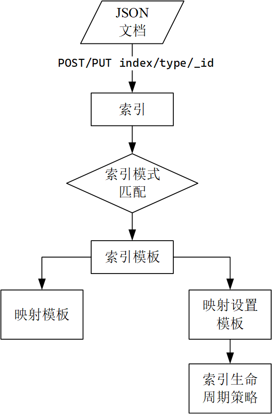

Elasticsearch
准备工作
安装Elasticsearch
Ubuntu
apt
wget -qO - https://artifacts.elastic.co/GPG-KEY-elasticsearch | sudo apt-key add -
sudo apt-get install apt-transport-https
echo "deb https://artifacts.elastic.co/packages/7.x/apt stable main" | sudo tee /etc/apt/sources.list.d/elastic-7.x.list
sudo apt-get update && sudo apt-get install elasticsearch logstash filebeat
程序的安装位置为
/usr/share。
deb
CentOS
软件仓库安装
rpm包安装
wget https://artifacts.elastic.co/.../elasticsearch-7.14.1-x86_64.rpm
wget https://artifacts.elastic.co/.../elasticsearch-7.14.1-x86_64.rpm.sha512
shasum -a 512 -c elasticsearch-7.14.1-x86_64.rpm.sha512
sudo rpm --install elasticsearch-7.14.1-x86_64.rpm
Docker
安装最新版ElasticSearch必须带具体标签（latest标签未绑定至最新版本）。
Development Mode （Single Node）
docker network create elastic
docker run -d --name elasticsearch --net elastic -p 9200:9200 -p 9300:9300 -e "discovery.type=single-node" elasticsearch:tag
Note: Pulling an images requires using a specific version number tag. The
latesttag is not supported.
Production Mode
https://www.elastic.co/guide/en/elasticsearch/reference/7.12/docker.html
The vm.max_map_count kernel setting must be set to at least 262144 for production use.
Error:
> ERROR: for kib01 Container "7d61ad9aeddd" is unhealthy. > bootstrap check failure [1] of [1]: max virtual memory areas vm.max_map_count [65530] is too low, increase to at least [262144]
vi /etc/sysctl.conf
vm.max_map_count=262144 # permanent settings for Linux
sudo sysctl -w vm.max_map_count=262144 # enable now for WSL (/etc/rc.local => u+x)
kibana
kibana用于Elasticsearch数据的可视化分析，可以与Elasticsearch安装在同一集群。
https://www.elastic.co/guide/en/kibana/current/docker.html
services:
kibana:
image: kibana:7.9.2
container_name: kibana7
environment:
ELASTICSEARCH_HOSTS: http://es_node:9200
ports:
- "5601:5601"
默认的Elasticsearch集群主节点名为elasticsearch，如果不是，通过环境变量ELASTICSEARCH_HOSTS设置，否则无法与集群建立连接。
启用安全配置
启用HTTPS/TLS：https://www.elastic.co/guide/en/elastic-stack-get-started/7.12/get-started-docker.html。启用HTTP后，访问elasticsearch/kibana都需要用户名和密码进行验证。
# 重启集群应用密码
docker-compose -f elastic-docker-tls.yml stop
docker-compose -f elastic-docker-tls.yml up -d
# 清理环境
docker-compose -f elastic-docker-tls.yml down -v
WSL中的证书文件：\\wsl$\docker-desktop-data\version-pack-data\community\docker\volumes\es_certs\_data（安装证书到系统）
问题
-
*WSL2文件系统访问权限问题
"Causedby:java.nio.file.NoSuchFileException:/usr/share/elasticsearch/data/nodes/0/node.lock"
原因：可能是镜像对挂载的数据卷（位于docker的卷目录下，在WSL中实际映射到Windows的文件系统中）没有正确的读写权限。==该问题在Linux虚拟机中不曾出现，且在删除出错的服务和数据卷后重新创建服务后该问题没有复现==。
-
问题：Exception in thread "main" java.nio.file.FileSystemException: /tmp/elasticsearch-15594239510299122966: No space left on device。
原因：宿主机存储空间不足，无法创建数据卷。清理磁盘或增加磁盘容量。
配置
系统配置（/etc/default/elasticsearch[Ubuntu]或/etc/sysconfig/elasticsearch[CentOS]）：包括ES运行相关的系统环境变量。
ES_PATH_CONF=/etc/elasticsearch # default
ES_JAVA_HOME=/usr/share/elasticsearch/jdk/bin/java
MAX_OPEN_FILES=65535
配置文件位于/etc/elasticsearch/elasticsearch.yml。重要配置项：
ES_TMPDIR: /data/tmp/es # 不使用默认临时文件目录防止被以外删除
node.name: es_005_data # 默认为$(hostname)
path:
data: /path/to/data # Multiple data paths deprecated in 7.13
logs: /path/to/logs
path.plugins: /path/to/plugins
network.host: 0.0.0.0 # 默认仅监听loopback
action.auto_create_index: *
ElasticSearch自带Java运行环境。ElasticSearch默认监听端口9200，如果被占用，将自动向后查询可用端口。
集群环境配置：
cluster.name: es_cluster # 集群名相同的节点才能加入集群
discovery.seed_hosts: # 发现集群节点,默认会扫描同一机器上的实例（9300 to 9305）
- node-1
- 192.168.1.11:9300
- seeds.mydomain.com
cluster.initial_master_nodes:
- node-1 # => node.name
- node-2
# at least one of [discovery.seed_hosts, discovery.seed_providers, cluster.initial_master_nodes] must be configured
当一个节点联系到单播列表中的成员时，它就会得到整个集群所有节点的状态，然后它会联系 master节点，并加入集群。
集群恢复：在集群重启的时候避免过多的分片交换。这可能会让数据恢复从数个小时缩短为几秒钟。
# gateway.recover_after_nodes: 3 # 集群至少有3个节点可用才开始恢复数据
gateway.recover_after_master_nodes: 1
gateway.recover_after_data_nodes: 3
# gateway.expected_nodes # 等待达到4个节点或持续5min钟后开始恢复
gateway.expected_data_nodes: 3
gateway.expected_master_nodes: 1
gateway.recover_after_time: 5m
配置插件
elasticsearch-plugin install [plugin_name] # curl host:9200/_cat/plugins
配置logstash
插件管理
Logstash包含了常用插件。
bin/logstash-plugin list --verbose
--group output|input|filter|codec
在线安装插件
从RubyGems.org获取插件：
logstash-plugin install|remove logstash-input-github
logstash-plugin install /path/to/logstash-output-kafka-1.0.0.gem # 安装本地插件
logstash-plugin update [logstash-input-github] # 默认更新所有插件
离线安装和更新插件：
logstash-plugin prepare-offline-pack --output OUTPUT.zip --overwrite [PLUGINS]
logstash-plugin install|update file:///path/to/logstash-offline-plugins.zip
PLUGINS表示要打包的插件（可使用通配符*）。
logstash执行环境
node.name: ${HOSTNAME}
path.data: LOGSTASH_HOME/data
timzzone？
pipelines.yml：
logstash管道配置
/etc/logstash/conf.d
The default Logstash installation includes the Beats input plugin. The Beats input plugin enables Logstash to receive events from the Elastic Beats framework, which means that any Beat written to work with the Beats framework, such as Packetbeat and Metricbeat, can also send event data to Logstash.]
可定义多个输入数据源和输出目标。
input {
beats {
port => "5044"
}
file {
path => "/var/log/messages"
type => "syslog"
}
kafka{
bootstrap_servers=>"192.168.13.10:9092"
topics=>["kafka_es_test"]
group_id=>"logstash_kafka_test"
}
}
filter {
grok {
# parse apache web logs
match => { "message" => "%{COMBINEDAPACHELOG}"}
}
}
output {
stdout { codec => rubydebug }
elasticsearch {
hosts => [ "localhost:9200" ]
index => "logstash_kafka_test"
}
}
测试
"@timestamp"日志收集时间，非日志中表示时间的字段。
bin/logstash -f first-pipeline.conf --config.test_and_exit # 测试配置文件
bin/logstash -f first-pipeline.conf --config.reload.automatic # 启用管道
启用服务
sudo systemctl daemon-reload
sudo systemctl enable --now elasticsearch.service # sudo is required
sudo systemctl start logstash.service
查看状态
查看集群状态
http://hostip:9200/ # 访问elasticsearch
http://hostip:5601/ # 访问kibana
GET /_cat/health?v
GET _cluster/health
The cluster status will remain yellow if you are only running a single instance of Elasticsearch.
查看日志
sudo journalctl --unit elasticsearch \
--since "2016-10-30 18:17:16"
API
使用REST接口访问Elasticsearch以查询或写入数据。使用curl提交数据访问请求：
curl -X<VERB> '<PROTOCOL>://<HOST>:<PORT>/<PATH>?<QUERY_STRING>' -d '<BODY>'
VERB：GET, POST, PUT, HEAD, or DELETE.
PROTOCOL：http or https
PATH：数据路径。
BODY：JSON请求体。
示例：
curl -XGET http://localhost:9200/_index/_doc/_id
查看可用管理接口
_/cat # 列出可用接口
列出的接口通常有两种调用方式：
_cat/ACTION?v # 返回简要信息（表格，v显示表头）
_ACTION # 返回详细信息（JSON）
/_cat/snapshots对应的API是/_snapshot[/{repo_name}]
常用接口：
GET /_cat/indices/{index}?v # 查看(指定索引模式)索引列表
GET /_cat/templates/?v # 查看索引模板
# health status index uuid pri rep docs.count ... store.size ...
GET /_cat/tasks?v # 查看正在运行的任务
# action task_id ... type start_time ... running_time ip node
GET /_cat/health?v # 查看集群状态
GET /_cat/master?v # 查看主节点信息
GET /_cat/nodes?v # 查看主节点信息
GET /_cat/plugins?v # 查看各节点安装的插件信息
GET /_cat/repositories # 查看快照仓库列表
GET /_cat/count/{index}?v # 查看(指定索引模式)文档数量
查看索引定义
GET /<index>
GET /<index>/{_mapping|_mappings}
GET /<index>/_mapping/field/fieldname //显式定义的映射才有返回结果
GET /<index>/_settings
GET /<index>/{_alias|_aliases}
GET _data_stream
GET _data_stream/{data_stream_name}
index可以包含通配符，_all代表所有索引（等效于*或省略索引）。
索引生命周期管理
将旧数据移动到较为便宜的存储设备中，从而提高性能并减小开销。
data tiers
| tiers | necessity | description |
|---|---|---|
| hot warm | required optional | 高性能节点 快速索引和搜索最近数据 |
| content | required | 非时序数据 |
| cold frozen | optional | 慢速便宜节点 |
在节点的配置文件中声明节点对应的tier。一个节点可以对应一个或多个tier。
node.roles: [ data_content, data_hot, data_warm ]
Searchable Snapshot
使用可搜索快照以减小本地存储开销。
Hadoop HDFS Repository Plugin | Elasticsearch Plugins and Integrations 7.14 | Elastic。
// PUT _snapshot/my_hdfs_repository
{
"type": "hdfs",
"settings": {
"uri": "hdfs://namenode:8020/",
"path": "elasticsearch/repositories/my_hdfs_repository",
"conf.dfs.client.read.shortcircuit": "true"
}
}
生命周期策略
内置生命周期策略：logs,metrics,synthetics。
GET _ilm/policy
GET _ilm/policy/logs
PUT _ilm/policy/my-lifecycle-policy
{...}
写入数据
将JSON文档存入Elasticsearch索引。
- 按需创建索引：添加数据时创建对应的索引，使用动态映射；
- 手动创建索引：
- 使用显式映射；
- 使用动态映射；
- 基于模板自动创建索引：添加映射模板和设置模板（生命周期管理）；
术语
索引
索引名称：在API中索引名称可使用日期函数动态生成查询索引名。表达式：
<static_name{now/d{yyyy.MM.dd-HH:mm:ss|+08:00}}>
索引名称中的包含的特殊字符必须使用URL编码：
from urllib.parse import quote
index = quote_plus(index_expr) # quote_plus对"/"也进行编码，以与路径分隔符区分开
浏览器等Web客户端通常会自动编码，而使用API时需要手动进行上述编码转换。
文档
JSON对象。
文档类型
type，即一个索引可声明一个或多个映射类型，在提交或查询数据时指定type，则按指定类型映射进行处理。如果一个索引的多个映射类型包含同一字段，但其数据类型不同，则在索引或查询数据时会产生冲突。5.6版本设置
index.mapping.single_type: true使索引仅支持单个映射类型；6.x版本仅支持定义单个type（可以是任意合法标识），且为了与7.x版本兼容，最好声明为_doc；7.x版本将弃用type声明（在API请求中声明参数include_type_name=true将产生启用警告），8.x版本将不再支持声明type。在新版本中索引的API中，
type=_doc且不再表示文档类型，仅作为API路径（类似于_mappings和_settings_）：PUT {index}/_doc/{id} POST {index}/_doc
Runtime fields：查询时进行计算的字段。
索引文档
创建索引
如果没有配置自动创建索引，那么在索引文档前，需要首先创建索引。
// PUT /my-index-000001
{
"settings": {
"index": {
"number_of_shards": 3,
"number_of_replicas": 2
}
},
"mappings": {
"properties": {
"field1": { "type": "text" }
}
}
}
创建索引时，可选择指定索引的配置、映射等信息。如果未指定映射，则索引将使用默认的自动映射规则。创建完成后返回执行状态。
{'acknowledge': True, 'shards_acknowledged': True}
删除索引
DELETE /<index_name>
不支持通配符批量删除。
索引的数据类型映射
将文档中的数据字段转换为ES存储的目标数据类型，在创建索引时为索引指定映射设置。
显式类型映射
映射定义了文档字段的数据类型、格式等。查看映射的定义。
//PUT /my-index-000001
{
"mappings": {
"<doc_type>":{ // *
"properties": {
"age": { "type": "integer" },
"email": { "type": "keyword" },
"name": { "type": "text" }
} } } }
*：doc_type已弃用(7.x)无须声明，直接将properties声明在mappings中。5.x需要声明。
更新映射：添加一个字段。注意，通常无法修改已经定义的字段，否则会与已有数据冲突。
//PUT /my-index-000001/_mapping # =>
{
"properties": {
"city": {
"type": "text",
"fields": { // 该字段的属性
"name": {
"type": "keyword"
}
}
}
}
动态类型映射
ES自动解析数据并设定对应的字段的类型。
Dynamic field mapping | Elasticsearch Guide 7.14 | Elastic
-
自动类型映射：修改自动映射配置（如果索引不存在将自动创建索引）：
//PUT my-index-000001 { "mappings": { "<doc_type>": { // * "dynamic": true, "date_detection": true, // 转换日期类型 "dynamic_date_formats": ["MM/dd/yyyy"], // 日期转换格式 "numeric_detection": true } } }*：doc_type已弃用(7.x)无须声明，直接将properties声明在mappings中。5.x需要声明。 -
基于规则的动态类型映射：基于规则进行类型映射。
{
"mappings":{
"dynamic_templates":[ // 可定义多个动态映射模板
{
"as_integer":{ // 模板名称
"match_mapping_type": "long", // 匹配检测到的数据类型*
"norms": false, // 不存储index-time scoring factor
"mapping":{
"type": "integer"，
"index": false // 不索引该字段**
}
}
},
{
"as_date":{
"match_pattern": "regex",
"match": "_time$", // 匹配字段名
"unmatch": "^collect",
"mapping":{ }
}
},
{
"as_keyword":{
"path_match": "name.*", // 匹配路径名
"path_unmatch": "*.middle",
"mapping": {},
"runtime": {}, // 查询时将字符串转换为keyword
}
]
}
}
*：匹配条件：如果未指定match_mapping_type,match,path_match中的任意一个，则该动态模板不会匹配任何字段。
查询时映射
- 通过脚本生成运行时的字段。
- 在执行搜索时定义运行时字段。
索引模板
如果索引名不存在且匹配该模板，则ES将根据该模板创建索引。
创建模板组件
索引模板组件通常由映射(mappings)和索引设置(index settings)模板组成。模板组件从模板定义中被抽离出来从而可以被==复用==（索引生命周期策略配置同理）。
映射模板
// PUT _component_template/my-mappings # => Create a mappings template
{
"template": {
"mappings": {
"properties": {
"@timestamp": {
"type": "date", // 数据类型
"format": "date_optional_time||epoch_millis" // 格式
},
"message": {
"type": "wildcard"
}
}}},
"_meta": {
"description": "Mappings for @timestamp and message fields",
"my-custom-meta-field": "自定义元数据"
}}
索引设置模板
索引设置定义了索引的生命周期策略。
//PUT _component_template/my-settings # Create a index settings template
{
"template": {
"settings": {
"index.lifecycle.name": "my-lifecycle-policy" // 索引生命周期策略
}},
"_meta": {
"description": "Settings for ILM",
"my-custom-meta-field": "自定义元数据"
}}
创建索引模板
//PUT _index_template/my-index-template
{
"index_patterns": ["my-data-stream*"], // 匹配索引/数据流的名称
"data_stream": { }, // data stream enabled
"composed_of": [ "my-mappings", "my-settings" ], // 模板组件
"priority": 500, // 优先级>=200，避免与内置索引模板冲突
"_meta": {
"description": "Template for my time series data",
"my-custom-meta-field": "More arbitrary metadata"
}}
创建文档
使用PUT/POST提交文档
将JSON文档存储为ES索引对象。API接口格式：
// PUT /<index>/_doc/<_id> # 创建或更新指定id文档 *
// POST /<index>/_doc/ # 创建文档并自动创建id **
// PUT /<index>/_create/<_id> # 显式创建指定id的文档
// POST /<index>/_create/<_id> # 显式创建指定id的文档
{
"fristName": "sunke",
"lastName" : "Lee" ,
"tags" : ["guitar","ball"]
}
// POST /users/_doc/1 => index/type_id
index：索引或数据流名称。如果目标不存在，则自动创建。
*：5.x：API第二级为<doc_type>，后续版本弃用doc_type，使用_doc/_create代替。
**：要自动创建ID，需要使用POST方法，op_type设置为create。
API查询参数：
version：显式指定文档的版本号（整数）；op_type：create如果文档存在则返回创建失败，默认index为创建或更新已有文档。等效于在API后添加/_create。timeout：等待主分片可用的超时时长，默认为1m（1分）。
批量提交文档索引操作
将文档索引操作数据放在HTTP请求主体中。每条操作数据需要包含操作说明和可选的文档数据，并以换行结束。
// PUT logs-my_app-default/_bulk?_source=false
{ "create": { } } // action and meta data => [PUT]
{ "@timestamp": "2099-05-07T16:24:32.000Z", "event": { "original": "192.0.2.242 - - [07/May/2020:16:24:32 -0500] \"GET /images/hm_nbg.jpg HTTP/1.0\" 304 0" } } // data
{ "index": { "_id":"1", "_type": "_doc"} } // => {POST}
{ "@timestamp": "2099-05-08T16:25:42.000Z", "event": { "original": "192.0.2.255 - - [08/May/2099:16:25:42 +0000] \"GET /favicon.ico HTTP/1.0\" 200 3638" } }
// new line
操作方式包括：create， index，update，delete（无数据行）。由于数据以\n区分记录，因此要确保JSON文件不能格式化换行缩进。如果数据量较大，也可指定传输的文件。
curl -H "Content-Type: application/json" -XPOST "localhost:9200/bank/_bulk?pretty&refresh" --data-binary "@accounts.json"
如果未指定目标索引，则需要在action数据中指定"_index"参数：
// PUT _bulk
{ "create" : { "_index" : "test", "_id" : "3" } }
{ "field1" : "value3" }
请求参数
_source是否返回提交的数据，或要返回的数据字段。
参考：https://www.elastic.co/guide/en/elasticsearch/reference/7.10/getting-started-index.html。
数据流
数据流适用于日志、事件、指标等自动生成数据。一个数据流由一个或多个后台索引组成。
数据流需要一个匹配的索引模板。
Every document indexed to a data stream must contain a
@timestampfield, mapped as adateordate_nanosfield type.
Filebeat
/var/lib/filebeat/registry存储了文件读取记录，进行重复测试时需要删除该目录。
filebeat.inputs:
- type: log
paths:
- /path/to/file/logstash-tutorial.log
output.logstash:
hosts: ["localhost:5044"]
Kafka
The Logstash Kafka consumer handles group management and uses the default offset management strategy using Kafka topics.
Logstash instances by default form a single logical group to subscribe to Kafka topics Each Logstash Kafka consumer can run multiple threads to increase read throughput.
当Elasticsearch遇见Kafka--Logstash kafka input插件 - 云+社区 - 腾讯云 (tencent.com)
input {
kafka {
bootstrap_servers=>"kafka_server:9092"
topics=>["kafka_es_test"]
group_id=>"logstash"
client_id=>"logstash"
auto_offset_resetedit=>"latest"
consumer_threads=>N_PARTITIONS
decorate_events=>"basic"|"extended" // 添加Kafka元数据 =>@metadata
security_protocol=>"PLAINTEXT"
topics_pattern=>"kafka*"
add_field=>{ }
codec=>"plain"
enable_metric=>true // 记录插件的性能日志
id=>"plugin_id" // 插件ID
tags=>["TAG_a", "TAG_b"]
type=>"log_type"
}
}
filter {
mutate {
add_field => { "[@metadata][target_index]" => "prod-%{+YYYY.MM.dd}" }
}
}
output {
elasticsearch {
hosts => [ "localhost:9200" ]
index => "logstash_kafka_test"
index => "%{[some_field][sub_field]}-%{+YYYY.MM.dd}" // 动态生成索引名
index => "%{[@metadata][target_index]}" // 使用添加的元数据作为索引名
id=>"plugin_id"
enable_metric=>true // 记录插件的性能日志
}
elasticsearch { // 数据流
hosts => [ "localhost:9200" ]
data_stream => "true"
data_stream_type => "metrics"
data_stream_dataset => "foo"
data_stream_namespace => "bar"
ilm_rollover_alias => "custom"
ilm_pattern => "000001"
ilm_policy => "custom_policy"
}
}
元数据：
[@metadata][kafka][topic][@metadata][kafka][offset][@metadata][kafka][timestamp]
查询文档数据
Query DSL
POST http://hostip:9200/index_name[/<doc_type>]/_search # *
POST http://hostip:9200/index1,index2,.../_search # "," => "%2C"
*：由于doc_type属性已弃用（7.x），查询时可不用指定。
index：索引名支持通配符*，使用*或_all查询所有索引。
查询参数
结构简单的查询参数可通过URL参数设置，所有参数均可通过HTTP请求体字段设置，URL参数优先级高于请求体字段。请求体使用JSON对象可表示复杂的序列或字典对象参数。
// POST http://hostname:9200/index_name/_search
{
"query": {<query_specifications>},
"sort": sort_specs,
"from": 10, // default=0
"size": 10, // default=10
"_source": ["account_number", "firstname"]
}
query：DSL查询语句声明，包括[单项查询]( #Term-level queries)、[复合查询]( #Compound queries)等。allow_no_indices=true：如果为false，目标索引==存在任何==缺失或关闭则返回错误；_source/_source_include/_source_exclude：是否要在返回结果中包含文档的字段数据，以及需要包含/排除的字段（支持字段名模糊匹配）。size=10：返回文档数量。from：指定返回记录偏移；Avoid using from and size to page too deeply or request too many results at once. By default, you cannot usefromandsizeto page through more than 10,000 hits. ==from+size<=10000==：search requests take heap memory and time proportional tofrom + size.timeout：等待每个分片响应的超时时长。version=false：返回文档的版本信息。
生成字段
通过脚本计算生成新的字段（也可使用查询时映射计算新的字段）；
"script_fields": {
"field_name": {
"script": {
"lang": "painless", // the script language, default to "painless"
"source": "field1 * field2"
}}}
字符串拼接脚本：默认禁用文本字段计算，可使用
keyword运算。doc['firstname.keyword'].value + ' ' + doc['lastname.keyword'].value使用
keyword得到的结果带“[]”，使用.value获取其字符串值。
查询视图
搜索请求默认获取当前可用的最新数据，使用查询视图可保证每次查询访问一致的数据。
分页视图
-
scroll=1m：分页搜索上下文的保存时长。由于后续请求会刷新上下文的保存时长，因此该值的设置只要大于一批数据处理的时长即可。查询结果返回
_scroll_id（每次查询后返回的值可能会发生变化，应使用最新值），后续查询使用_scroll_id继续获取数据。每次调用
scrollAPI返回下一批数据直到获取所有查询结果（即返回查询结果为空）；如果查询语句包含聚合查询，仅第一次响应包含聚合查询结果。// GET /my-index-000001/_search -> _scroll_id { "scroll": "1m" } // POST /_search/scroll { "scroll" : "1m", // 后续请求将更新分页上下文的保存时长* "scroll_id": _scroll_id }*：如果后续请求未指定scroll参数，后台将删除该搜索上下文。也可通过DELETE /_search/scroll接口删除搜索上下文以释放资源。分页搜索的结果在首次请求搜索时已经确定，后续分页返回结果不受文档更新的影响。
We no longer recommend using the scroll API for deep pagination. If you need to preserve the index state while paging through more than 10,000 hits, use the search_after parameter with a point in time (PIT).
排序视图
-
sort：排序字段，命令行参数格式为field1:asc,field:desc,...；使用sort语句后，返回的结果包含sort字段，表示当前文档的排序字段的值。{ "sort": [ "_doc", // simplest with default order { "account_number": "asc" }, //simple： asc|desc { "post_date" : {"order" : "asc", "format": "yyyy-mm-dd"}}, //complex ], "from": 0 // 设置为0或-1 } -
search_after：分页返回排序查询结果。包含sort声明的查询返回文档hits每条记录中包含额外的sort字段，将该字段值设置为search_after参数的值以返回排序结果的下一页。
PIT
Point in time接口生成查询发起时的轻量级数据视图，从而保证在一段时间内使用查询接口可获取一致的数据而不受数据更新的影响。[7.10+]
// POST /my-index-000001/_pit?keep_alive=1m // create pit view -> pit_id
// POST /_search // pit search not specify index name
{
"query": {},
"pit": { "id": "<pit_id>", "keep_alive": "1m" }
}
// DELETE /_pit
{ "id" : pit_id } // 完成搜索任务后删除视图释放资源
分片查询
当查询大量文档时，可将其分片，并分别请求每个分片的查询结果。
// GET /_search
{
"slice": {
"id": 0, // 当前分片
"max": 2 // 分片最大数量
},
"query": {},
"pit": { "id": "<pit_id>" }
}
分页返回排序结果
如果查询语句包含排序参数声明，则返回结果包含更新的pit ID，同时返回的最后一条数据包含搜索分界编号：
{
"pit_id" : "<updated_pit_id>",
"hits" : {
"hits" : [
//... hitted documents
{
"sort" : [ "2021-05-20T05:30:04.832Z", 4294967298 ]
}
]
}
}
基于上述返回信息，可查询排序结果的下一页数据（类似于排序视图）：
// GET /_search
{
// query 和 sort 声明需要保持不变
"pit": { "id": "<updated_pit_id>", "keep_alive": "1m" },
"search_after": [ "2021-05-20T05:30:04.832Z", 4294967298 ],
"track_total_hits": false // speed up pagination.
}
参数值的单位约定
| 纯量 | 字节 | 长度 | 时间 |
|---|---|---|---|
b: bytes | nanos | ||
k: kilo | kb | nmi | micros |
m: mega | mb | mm | ms |
g: giga | gb | cm | s: seconds |
t: tera | tb | m: meters | m: minutes |
p: peta | pb | km | h: hours |
d: days |
Term-level queries
You can use term-level queries to find documents based on precise values in structured data. Examples of structured data include date ranges, IP addresses, prices, or product IDs.
查询文档属性
type query
Returns documents of the specified type.
ids query
Returns documents based on their document IDs.
查询文档字段
exists
返回索引中包含指定字段的文档。文档不含某个字段的原因包括：
- JSON文档字段的值为
null或[]； - 在映射模板中，该字段设置了
"index": false、该字段长度超过ignore_above或触发ignore_malformed（字段值格式不正确）；
"exists": {
"field": "user"
}
term
term query：Returns documents that contain an exact term in a provided field.
"term" : { "tags" : "production" }
terms query: Returns documents that contain one or more exact terms in a provided field.
"terms" : { "tags" : ["production", "price"] }
range
range query：返回给定区间的记录，区间可以为数值或时间。
"range": {
"query_field": {
"gte": 10, "lte": 20,
"format": "yyyy-MM-dd"
}
}
IP地址类型匹配方式：支持
term或range匹配方式："term" : { "ip_addr" : "172.28.76.0/24" } // "/24"用于匹配子网 "range": { "ipaddr": { "gt": "10.0.1.3", "lt": "10.0.1.14"} // 用于匹配非完整子网 }
关键字匹配
prefix 前缀：匹配一个字段的前缀。
wildcard通配符：*匹配零或多个字符，?恰匹配一个字符。
regexp正则表达式。模式必须与字段的值完整匹配（即默认包含起始和结束锚点^...$）。
"regexp": { "collect_time_hour": "[0-9]{8}(18|19|20|21|22)"} // 简写，仅提供字段与模式
"regexp": { // 完整语法，提供额外选项
"collect_time_hour": {
"value": "[0-9]{8}(18|19|20|21|22)",
"flags": "ALL", // enables all optional regexp syntax.
"case_insensitve": false // 7.10.0起支持
}
}
Elasticsearch未使用Perl兼容正则表达式，非捕获组（
?:）不能正常使用。
flags为正则表达式语法可选项标识，用|连接一个或多个标识。其中包括：
INTERVAL：<001-200>用于匹配一个区间的数字（字符串）；INTERSECTION：启用&运算符（交集），即一个字符串同时满足两个匹配模式；COMPLEMENT：启用~运算符（补集）；
使用wildcard或regexp时，应该避免起始位置为通配符或正则表达式的匹配模式，应该使用一个确定前缀以提高匹配效率。字段类型为keyword类型；如果字段为text类型，上述匹配方式无效，需要使用match查询。
全文查询
match：在文档所有内容中匹配一个或多个单词，计算匹配分数。
{
"match_all": {}, // 特殊匹配：匹配所有内容
"match": {
"message": {
"query": "this is a test",
"operator": "AND", // AND | OR 匹配所有/任意单词
"minimum_should_match": 1
}
},
"match": { "message": "this is a test" }
}
math_phrase：匹配整个词组，语法类似match。
match_phrase_prefix：模式中的最后一个单词可以仅前缀匹配。
fuzzy query：Returns documents that contain terms similar to the search term. Elasticsearch measures similarity, or fuzziness, using a Levenshtein edit distance.
Compound queries
Compound queries wrap other compound or leaf queries, either to combine their results and scores, to change their behaviour, or to switch from query to filter context.
constant_score query
A query which wraps a filter query, executing it in filter context. All matching documents are given the same “constant” _score.
"query": {
"constant_score": {
"filter": { // 仅能包含一个条件
"term": { "user.id": "kimchy" }
}}}
filter查询仅可包含一个查询条件，如果需要提供多个查询条件，则使用bool查询封装查询条件。
bool query
The default query for combining multiple leaf or compound query clauses, as must, should, must_not, or filter clauses. T==he must and should clauses have their scores combined== — the more matching clauses, the better — while the must_not and filter clauses are executed in filter context.
"query": {
"bool" : {
"filter": { // 多个条件则为字典构成的序列
"term" : { "tags" : "production" }
},
"must_not" : {
"range" : { "age" : { "gte" : 10, "lte" : 20 } }
},
"must" : {
"term" : { "user.id" : "kimchy" }
},
"should" : [
{ "term" : { "tags" : "env1" } },
{ "term" : { "tags" : "deployed" } }
],
"minimum_should_match" : 1,
"boost" : 1.0
}}
minimum_should_match：指定should语句必须匹配的数量或百分比（而非仅依据相似性得分）。如果bool查询仅包含should，那么默认值为1，反之，默认值为0（可选条件）。
should为空时，minimum_should_match应该设置为0，否则无返回结果。
boosting query
Return documents which match a positive query, but reduce the score of documents which also match a negative query.
dis_max query
A query which accepts multiple queries, and returns any documents which match any of the query clauses. ==While the bool query combines the scores from all matching queries, the dis_max query uses the score of the single best-matching query clause==.
function_score query
Modify the scores returned by the main query with functions to take into account factors like popularity, recency, distance, or custom algorithms implemented with scripting.
EQL
Event Query Language (EQL) is a query language for event-based, time series data, such as logs.
We designed EQL for security use cases.
GET /my-index-000001/_eql/search
{
"query": """
sequence by process.pid with maxspan=1h
[ process where process.name == "regsvr32.exe" ]
[ file where stringContains(file.name, "scrobj.dll") ]
"""
}
SQL
Elasticsearch SQL allows SQL-like queries to be executed in real-time against Elasticsearch. One can think of Elasticsearch SQL as a translator, one that understands both SQL and Elasticsearch and makes it easy to read and process data in real-time, at scale by leveraging Elasticsearch capabilities.
//POST /_sql?format=txt csv,json,yaml,...
{
"query": "SELECT * FROM library WHERE release_date < '2000-01-01'",
"fetch_size": 5, // 分页查询
"columnar": false // 按列返回数据
}
[Mapping concepts across SQL and Elasticsearch | Elasticsearch Guide 7.14] | Elastic
[Response Data Formats | Elasticsearch Guide 7.14] | Elastic
SQL CLI
./bin/elasticsearch-sql-cli http[s]://some.server:9200
聚合查询
根据文档查询结果进行聚合。聚合查询DSL基本语法：
{
"query": {},
"aggregations" : { // => "aggs"
"<aggregation_name>" : {
"<aggregation_type>" : {
// <aggregation_body>
},
// [,"meta" : { [<meta_data_body>] } ]?
// [,"aggregations" : { [<sub_aggregation>]+ } ]?
},
"<aggregation_name_2>" : { }
}
}
aggregation_name也作为返回结果的key。aggs是aggregations的别名。
聚合分为四类：Metric、Bucketing、Matrix、[Pipeline](Pipeline Aggregations)。
统计聚合
Metric Aggregation：字段的统计特征计算。查询返回结果为字典，通常其中value字段为查询结果。
Average/Max/Min/Sum Metrics
"avg": {"field": "grade" , "missing": 10 } # aggregation_body
missing: 填充缺失值。
Weighted Average
"weighted_avg": {
"value" : {"field": "grade", "missing": 10},
"weight": {"field": "weight", "missing": 1}
} # aggregation_body
Percentile
"percentiles": {
"field": "load_time",
"percents": [ 95, 99, 99.9 ],
"keyed": true
}
默认区间为
[ 1, 5, 25, 50, 75, 95, 99]，使用percent指定区间。
keyed：默认将百分比设置为返回值的键名，设为false则返回key和value分别表示百分比和对应的值。
Boxplot (quantile)
"boxplot": { "field": "load_time" }
返回结果包括：min、q1、q2、q3、max。
Median
"median_absolute_deviation": {"field": "rating"} # 近似计算
Stats
"stats": { "field": "grade" }
"extended_stats": { "field": "grade" } # more statistic details
stats返回结果包括：min、max、sum、count和avg等多个字段（不包括value字段）。
String Stats
"string_stats": { "field": "message.keyword" }
计数
"cardinality" : {"field": "type"} # 近似计算不重复值的数量
"value_count" : { "field" : "type" } # 不去除重复
value_countif a field has duplicates each value will be counted individually.
Geo Bounds/Centroid
计算坐标边界和中心。
T-Test
检查一个字段是否符合学生t分布。
Top-Metrics
"top_metrics": {
"metrics": {"field": "m"},
"sort": {"s": "desc"},
"size": 3
} # 返回按sort字段排序后位于顶部的记录的指定字段的值
metrics可用数组指定返回多个字段。
Top Hits Aggregation
https://www.elastic.co/guide/en/elasticsearch/reference/current/search-aggregations-metrics-top-hits-aggregation.html
分组聚合
Buckets Aggregation：根据指定标准(criterion)对记录进行分组（bucket），并返回每一组包含的记录数(doc_count)。==Bucket聚合可以包含针对每个分组记录的子聚合==。
"aggs":{
"bucket_agg_name":{
"bucket_agg_type":{"param": "value"},
"aggs":{ // 子聚合查询
"sub_agg_name":{"sub_agg_type":{"param": "value"} },
}}}
==嵌套的聚合sub_agg_type可以是针对每个bucket的统计聚合、分组聚合、或者针对整个聚合结果的[Parent管道聚合](#Parent Aggregation)==。
Range
按给定区间分组；
Date Range
按给定的日期区间分组（from/to）；
Terms
"terms": {
"field": "genre[.keyword]",
"size": 1000,
"show_term_doc_count_error": true,
"order": { "_count": "asc" },
"order": { "playback_stats.max": "desc" },
"include": ".*sport.*",
"include": [ "mazda", "honda" ],
"exclude": "water_.*",
"exclude": [ "rover", "jensen" ],
}
size指定返回分组的数量（默认为10）。
order='_count'|'_key'|...，可以==使用子统计聚合返回的结果==进行排序。
首先计算include，再计算exclude，表达式可以是精确匹配或正则表达式。
terms仅支持根据单个字段进行分组，[Composite Aggregation](#Composite Aggregation)可使用多个字段进行分组，并支持分页返回结果。
返回结果中的计数是近似值。
https://www.elastic.co/guide/en/elasticsearch/reference/current/search-aggregations-bucket-terms-aggregation.html
响应内容：
doc_count_error_upper_bound：计数误差上界；
sum_other_doc_count：响应结果中未包含的匹配内容计数；
直方图（Histogram）
按给定字段的值所在区间$[nT,(n+1)T)$对记录进行分组，聚合后的bucket_key的计算方式为bucket_key = Math.floor((value-offset)/interval)*interval+offset（offset为区间边界偏移量）。
"histogram": { "field": "price", "interval": 50 }
For range values，其覆盖区间上的所有分组都计算在内。
对分组结果再进行[求和](#Average/Max/Min/Sum Metrics)等聚合运算，可以得到统计直方图。
Date Histogram
"date_histogram": {
"field": "date",
"calendar_interval": "month",
"format": "yyyy-MM-dd",
"time_zone": "+08:00"
}
支持的日历周期（calendar_interval）包括：minute,1m、hour,1h、day,1d、week,1w、month,1M、quarter,1q和year,1y。不支持支持区间取值为多个单位周期。
支持的固定周期（fixed_interval）包括：ms、s、m、h、d，最为单位与数字组合使用。
Filters Aggregation
过滤聚合内容（也可在查询语句使用filter设定，此处可作为聚合的补充过滤条件，可用于match等方法过滤内容），返回一个分组：
"filter": { "term": { "type": "t-shirt" } },
添加多个过滤条件，每个条件对应一个分组；如果other_bucket=true，则未被任何过滤条件匹配的记录将被分到一个额外分组中：
"filters":{
"filters": {
"error": {"term": { "body": "error" }},
"warning": {"term": {"body": "warning"}}
},
"other_bucket": true,
"other_bucket_key": "other_messages"
}
复合分组聚合
多个层级的聚合。聚合语句内容：
"genre_group":{ // genre + state
"terms": {
"field": "genre[.keyword]" // ,...
},
"aggs": { // 针对genre_group得到的分组分别根据state进行再一次分组
"state_group":{
"terms": {
"field": "state[.keyword]",
} } } }
The composite aggregation is expensive.
composite使用多个字段组合进行分组；支持分页返回分组结果（类似查询记录时的scroll）
"composite_group":{ // genre + state
"composite": { // R6.1
"sources": [
{ "state": {
"terms": { "field": "state.keyword", "order": 'asc' }
}},
{ "gender": { "terms": { "field": "gender.keyword" } } }
],
"after": {},
"size": 10
}}
返回结果中包含after_key字段，并在后续查询中指定为after的值，可从上次返回结果后查询剩余内容（如果记录数多于size给定的值，则后续返回内容非空）。
composite仅支持根据分组字段进行排序，如果需要根据分组的计算结果（例如记录计数），则需要使用管道聚合（[bucket_sort](#Bucket Sort)）。如果指定的字段值为序列，则序列每个元素会和其他分组字段进行组合，形成多个分组。
multi_terms类似于composite，但不支持分页，可使用order定义排序。
"multi_group":{ // genre + state
"multi_terms": { // R7.12
"terms": [
{ "field": "state" },
{ "field": "gender"}
],
"size": 10 // 返回分组数量
}}
Pipeline Aggregations
管道聚合对其他聚合的输出进行统计运算。
bucket_path语法：指定输入分组。
PATH = [AGG_NAME>]SUB_AGG_NAME[.METRIC];
"_count"是一个特殊的路径，用于表示记录计数。
Sibling
Sibling：使用一个聚合的输出计算，并在生成一个新的聚合结果。==与分组聚合子聚合的区别==：与相关聚合在同一层级，而非在其内部。
使用相对路径：
"aggs": {
"agg_name": { "agg_type":{"param": "value"} },
"sibling_agg_name": {
"sibling_pipe_agg_type": {
"buckets_path": "AGG_NAME[>SUB_AGG_NAME]"
}}}
Avg/Max/Min/Sum
"max_bucket": {"buckets_path": "aggs_name>sub_agg_name"}
与统计聚合的对应类型区别，Pipeline聚合的类型名称带后缀
_bucket。
Percentile Bucket
"percentiles_bucket": {
"buckets_path": path, "percents": [], "keyed": true
}
查看Percentile。
Parent Aggregation
Parent：位于父聚合（例如Buckets聚合）内部，根据父聚合的输出字段进行计算，并将结果添加到父聚合生成的buckets中或影响父聚合的返回结果（如bucket_sort）。
"aggs": {
"agg_name": {
"agg_type": { "param": "value" },
"sub_agg_name": {
"parent_pipe_agg_type": {
"buckets_path": "the_sum" ,
"param": "value"
}}}
Sibling和Parent聚合类型的用法和使用位置：Sibling聚合类型应用于所有Buckets中的某个统计量，需要在一个聚合计算完成后才能使用其结果进行计算，因此需要置于Buckets聚合的同层级。==Parent管道聚合的计算结果是作用于父聚合的，因此位于父聚合内部，由父聚合调用执行==。
Sibling置于Buckets聚合内部出错：The first aggregation in buckets_path must be a multi-bucket aggregation for aggregation.
Parent置于Buckets聚合的同级出错：XXX aggregation [xxx] must have a histogram, date_histogram or auto_date_histogram as parent but doesn't have a parent。
Moving Avg
"moving_avg": {
"buckets_path": "the_sum",
"model": "holt",
"window": 5,
"gap_policy": "insert_zeros",
"settings": {"alpha": 0.8}
}
差分（Derivative）
"derivative": { "buckets_path": "the_sum" }
CumSum/CumCardinality
"cumulative_sum": {"buckets_path": "the_sum"}
"cumulative_cardinality": {"buckets_path": "my_cardinality_agg"}
Bucket Sort
使用父聚合的结果中的字段进行排序：
"bucket_sort_name":{
"bucket_sort": {
"sort": [
{ "sort_field_1": { "order": "asc" } },
{ "sort_field_2": { "order": "desc" } },
"sort_field_3"
],
"from": 1,
"size": 3
}}
bucket_sort仅对当前返回页排序，如果bucket结果分页，则每一页单独排序。
备份和恢复
快照
创建快照仓库
curl -XPOST http://hostname:9200/_snapshot/hdfs_backup -d \
{
"type": "hdfs",
"settings": {
"uri": "hdfs://namenode:9000/",
"path": "backup/path" // 使用相对目录，在ES用户主目录下
}
}
curl http://hostname:9200/_snapshot/hdfs_backup # get repo info
curl -XDELETE /_snapshot/hdfs_backup # 删除快照仓库
快照仓库名支持通配符
*；如果仓库名未_all或未提供，则会返回所有快照仓库的信息。
使用HDFS作为快照仓库
安装插件repository-hdfs。
验证仓库配置
如果创建备份仓库时未指定?verify=false参数，可以单独执行验证：
curl http://hostname:9200/_snapshot/hdfs_backup/_verify # verifying
创建快照
curl -XPUT /_snapshot/hdfs_backup/snapshot_1?wait_for_completion=true -d
{
"indices": "index_1,index_2"
} # 指定索引名称过滤快照内容，支持通配符
快照是增量创建的，对比仓库中已有的索引文件，仅加入新建或修改过的文件到快照中。
集群同一时间只能运行一个快照进程。
获取快照信息
curl /_snapshot/hdfs_backup/snapshot_1
curl /_snapshot/hdfs_backup/snapshot_*,some_other_snapshot
curl /_snapshot/hdfs_backup/_all
curl /_snapshot/hdfs_backup/_current # 正在执行的快照
curl /_snapshot/_status
curl /_snapshot/hdfs_backup/_status
curl /_snapshot/hdfs_backup/snapshot_1/_status
删除快照
curl -XDELETE /_snapshot/hdfs_backup/snapshot_1
删除快照将删除快照中未被其他快照引用的文件。删除正在执行的快照终止快照过程。
恢复
curl -XPOST /_snapshot/hdfs_backup/snapshot_1/_restore -d \
{
"indices": "index_1,index_2",
"ignore_unavailable": true,
"include_global_state": true,
}
恢复时可指定索引设置覆盖快照中的设置。
恢复到其他集群
快照数据未绑定到特定集群或集群名，因此可以恢复到其他集群（无须具有相同集群大小和拓扑）。
5.x=>6.x，5.x/=>7.x
问题
HDFS访问权限：java.security.AccessControlException: access denied ("javax.security.auth.PrivateCredentialPermission" "org.apache.hadoop.security.Credentials" "read")。
修改插件的Java安全选项
$PLUGIN_PATH/repository-hdfs/plugin-security.policy：grant { permission javax.security.auth.PrivateCredentialPermission "org.apache.hadoop.security.Credentials * \"*\"", "read"; }
在ES启动脚本ES_HOME/bin/elasticsearch中，为启动命令添加以下Java选项，并重启集群。
-Djava.security.policy=ES_HOME/plugins/repository-hdfs/plugin-security.policy
复制数据
elasticsearch-dump \
--input=http://source.es.com:9200/my_index \ # 源索引支持通配符
--output=http://target.es.com:9200/my_index \
--type=data \
--limit 100 \ # 根据集群配置将单批读取数据量上调可加快读取速度
elasticsearch-dump: Import and export tools for elasticsearch (github.com)
Python客户端
底层接口elasticsearch：封装了Elasticsearch REST API，通过Helper类简化API调用2。
HTTP传输：客户端每个配置或探测到的节点建立一个持久连接（
ConnectionPool），并追踪每个节点的状态。如果节点变为无响应，则其对应的连接将被设置一个超时区间，直到超时区间结束才重新检测该节点是否可用。默认，连接池中的节点随机排列，并通过轮询方式调用以实现负载均衡。
高层接口elasticsearch-dsl：以Python风格提供搜索接口。
使用Elasticsearch主版本号相同的Python客户端版本：
elasticsearch5、elasticsearch6……elasticsearch总是与当前Elasticsearch最新稳定版本一致。
Python REST API
创建客户端连接实例
import elasticsearch5 as es
es_cli = es.Elaticsearch(
hosts=[
{'host': 'hostname'},
{'host': 'ip_addr', 'port': 9200},
'[http://user:secret@]host_addr:9200/path'
]
# Transports参数[elasticsearch.transport.Transport]
sniff_on_start=True, # 自动探测集群节点
sniff_on_connection_fail=True,
sniffer_timeout=60, # 自动探测的时间间隔*
retry_on_timeout=False, # 超时触发使用不同节点重试
# Connection参数[Urllib3HttpConnection]**
timeout=10, # 全局HTTP/TCP超时限制
maxisize=10, # 限制客户端与每个ES节点建立连接数(多线程并发查询)
#
)
es_cli.info() # 获取当前集群的基本信息
es_cli.ping() # 探测集群是否可用
*：另一个参数sniff_timeout表示一次探测请求的超时时限（通常设置较小以尽可能快地探测集群所有节点）。
**：HTTPS连接的相关参数：use_ssl=False, verify_certs=True, ca_certs=None, client_cert=None, client_key=None。
ES客户端内置属性
提供访问ES集群以及各类对象的代理，查看集群和数据的相关状态。
cat、cluster、indices、ingest、nodes、snapshot、tasks。
API全局参数(8.x版本弃用)
ignore=[400,404]：出错时默认会抛出异常，如TransportError，通过该参数忽略某些错误。
request_timeout=1：API请求超时限制（秒）。
某些API包含的
timeout参数限制其内部操作的超时时间，不能保证请求在指定时间后返回。
文档操作接口
读取信息
es_cli.exists(index, doc_type, id) # 查看文档是否存在*
es_cli.count(index,doc_type,body)
*：要查看索引是否存在，调用cli.indices.exists()方法。
读取文档
es_cli.get(index, id, doc_type,...) # 返回指定id的JSON文档
es_cli.mget(ids, index, doc_type,...) # 返回指定id的多个JSON文档
es_cli.get_source(index, id, doc_type,...) # 返回指定索引文档的源文档
搜索文档内容
es_cli.search(index,
doc_type=None,
body=dsl, # JSON文本或字典对象
_source, # 是否返回_source字段
_source_{include|exclude}, # 返回数据要包含/排除的文档字段
from_=0,
scroll='1000s', # 启用分页并指定分页存活时长
size=10, # 返回的数据量
allow_no_indices=False, # 允许通配符匹配不到任何索引
ignore_unavailable=True, # 忽略
version=False, # 是否返回文档的版本信息
)
_source：True/False指定是否返回JSON文档的字段；也可指定字段列表返回指定的字段（等效于指定_source=True,_source_include=fields）；default_operator：AND/OR(default)，查询文本的默认连接运算符。expand_wildcards：通配符的匹配范围，默认为open，其他包括：closed、none、all。
分页搜索：
es_cli.scroll(scroll_id, body=dsl, scroll='1000s')
es_cli.clear_scroll()
迭代读取：
from elasticsearch import helpers
helpers.scan(es_cli, query,scroll,preserve_order=False,clear_scroll=True)
搜索模板：
es_cli.search_template(...) es_cli.get_template(id) es_cli.put_template(id) es_cli.delete_template(id) es_cli.exist_template(name)
id：搜索模板ID。
聚合搜索
在查询结构的查询语句body中，声明aggregations/aggs语句。
创建文档接口
必须指定文档IDid（可以是整数或字符串形式，最终存储为文本），如果文档已存在，且未指定不同的version，会抛出ConflictError。
es_cli.create(index, doc_type, body, id=None, timeout,version...) # -> 文档的基本信息
创建的文档会经过一定的延迟才可被搜索。
doc_type：文档类型。5.x必须指定文档类型，7.x为可选参数。body：文档数据；id：文档编号。如果未指定，则由ES自动生成。timestamp：文档显式指定时间戳；ttl：文档失效时间；version：显式指定文档版本号。
更新文档：==不会覆盖原有文档，而是创建一个新的版本并更新版本号==。
es_cli.update(...,_source,_source_include,_source_exclude,fields)
创建或更新文档：
es_cli.index(index, doc_type, body, id, op_type='index',...) # -> 文档的基本信息
op_type：'index'表示创建或更新，create仅在文档不存在的情况下创建文档。
批量写入操作
底层的bulk()API需要传递批量的文档文本，不方便进行数据处理。es.helpers提供封装直接处理包含文档对象的序列。
es_cli.bulk(
body, # action-data pair, separated by newline.
index, doc_type
)
helpers.bulk(es_cli,actions,stats_only=False,raise_on_error=True) #-> (...)*
helpers.streaming_bulk(es_cli, actions,...) # bulk()封装streaming_bulk()
helpers.parallel_bulk(...)
*：stats_only=True：除返回写入成功的数量外，仅返回错误的统计数量；反之，返回错误的详细信息构成的列表。为了避免批量插入中途出现错误而终端批量操作，可令raise_on_error=False。
批量对象序列的元素结构通常与search()的返回结构一致：
{
'_index': 'index-name',
'_type': 'doc',
'_id': 42,
'_source': {...}
}
如果输入数据字段中不包含source，则helpers.bulk()将从输入对象的字段中首先提取元数据字段，将剩余数据作为文档数据。可通过元数据_op_type指定操作类型，包括index(默认)、create、delete和update。
删除文档
es_cli.delete(index, doc_type, id, timeout)
删除查询匹配的结果：
es_cli.delete_by_query(...) # 接受search接口的参数
索引管理接口
通过ES客户端实例提供的索引的客户端代理IndicesClient提供的接口来管理索引。
查看索引接口
索引汇总信息：
es_cli.cat.indices(index, format='json|yaml', health=None,s=None,v=False)
health：'green'|'yellow'|'red'，按节点状态筛选；
索引详细信息：
es_cli.indices.exists(index, ignore_unavailable) # 索引是否存在
es_cli.indices.get(index) # 获取索引信息(alises,settings,mappings)
index：支持通配符。
创建索引接口
es_cli.indices.create(index, body,...) # -> 返回执行状态
body:dict：索引的配置，包括设置(settings)和映射(mappings)的JSON对象。
获取已有索引的这些配置：
es_cli.indices.get_mapping(fileds, index, doc_type,...) # 获取索引的映射
es_cli.indices.get_settings(fileds, index, doc_type,...) # 获取索引的配置
es_cli.indices.get_field_mapping(fileds, index, doc_type,...)
返回JSON对象以索引名为根节点。
开启或关闭索引接口
es_cli.indices.open(index, ingore_unavailable,...)
es_cli.indices.close(index, ingore_unavailable,...)
删除索引接口
es_cli.indices.delete(index)
es_cli.indices.delete_alias(index, name)
索引数据迁移
es_clit.reindex(body=dsl, ) # reindex all docs from one index to another
helpers.reindex(es_cli, src_index, tgt_index,...)
模板管理接口
es_cli.cat.templates(
name=pattern, #*
format='json', # 以JSON/YAML格式输出,默认以纯文本表格输出
h='name,template', # 要输出的列
s='name,template', # 对输出按列排序
v=True # 显示表头
) # 返回匹配的模板名称
es_cli.indices.exists_template(name='xxx') -> bool
es_cli.indices.get_template(name='xxx') -> Dict[str,dict]
es_cli.indices.put_template(name='xxx', body, create=False) #**
es_cli.indices.delete_template(name='xxx')
*：name参数支持通配符。
**：create=False支持替换已有模板。
OpenSearch
OpenSearch is a community-driven, open source fork of Elasticsearch and Kibana.
OpenSearch is a community-driven, Apache 2.0-licensed open source search and analytics suite that makes it easy to ingest, search, visualize, and analyze data. Developers build with OpenSearch for use cases such as application search, log analytics, data observability, data ingestion, and more.
OpenSearch consists of a data store and search engine (OpenSearch), and a visualization and user interface (OpenSearch Dashboards). Users can extend the functionality of OpenSearch with a selection of plugins that enhance search, security, performance analysis, machine learning, and more.
Get started - OpenSearch documentation